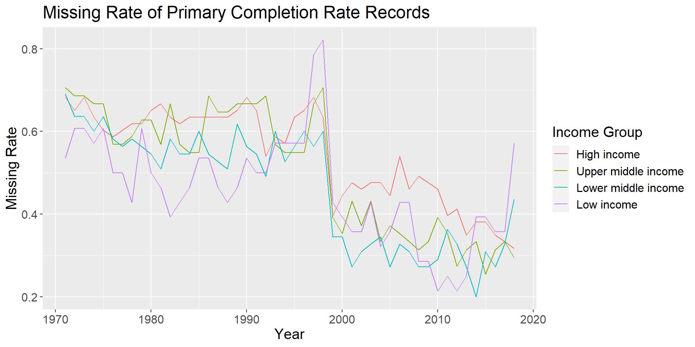
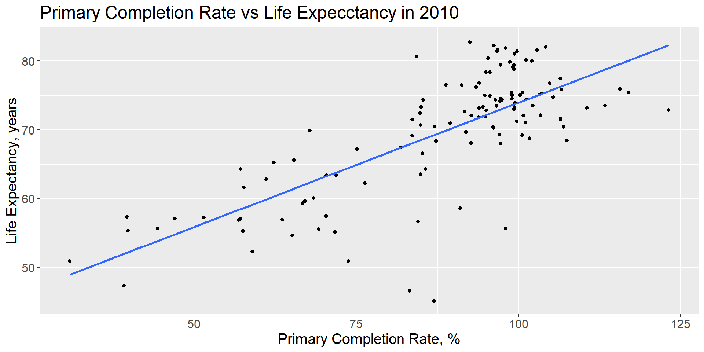
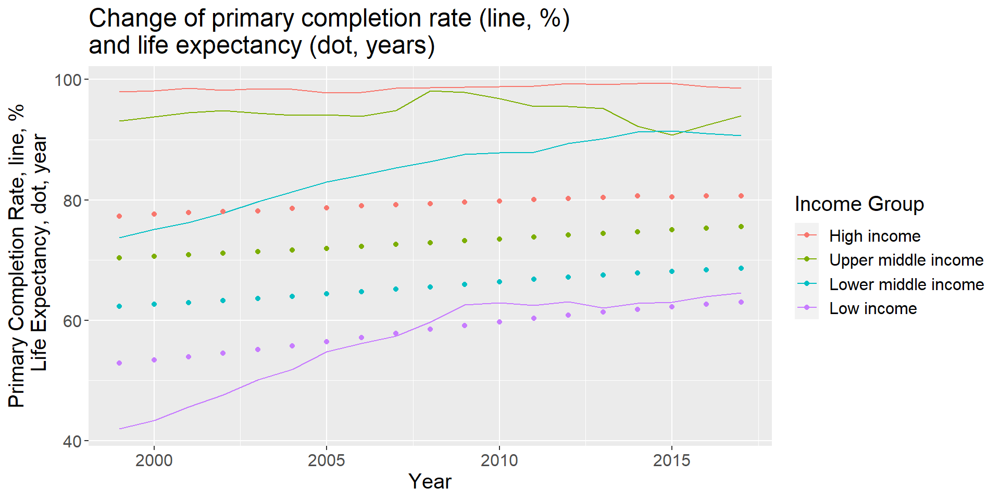
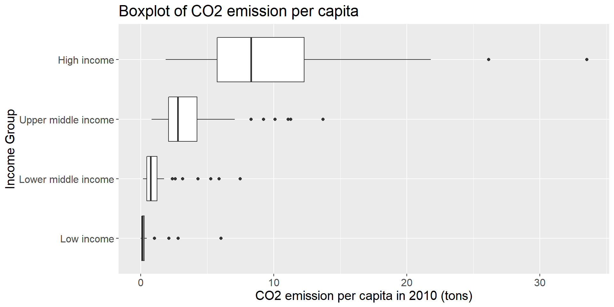
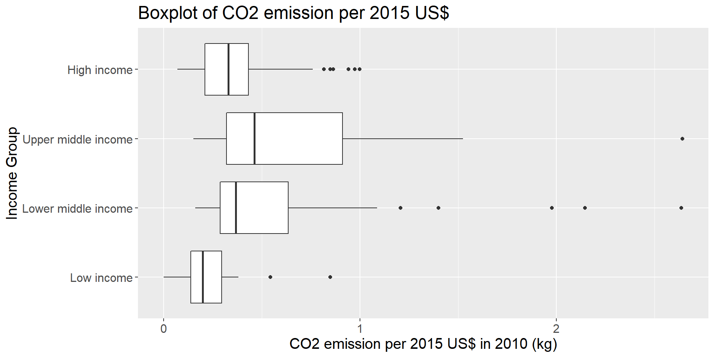
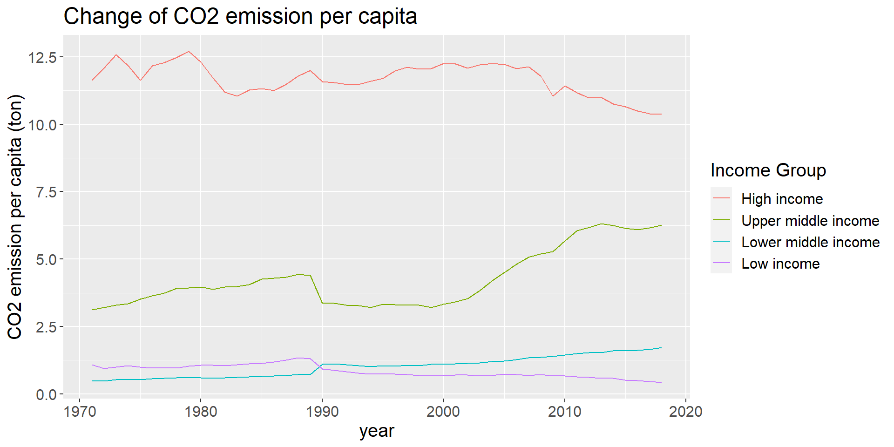
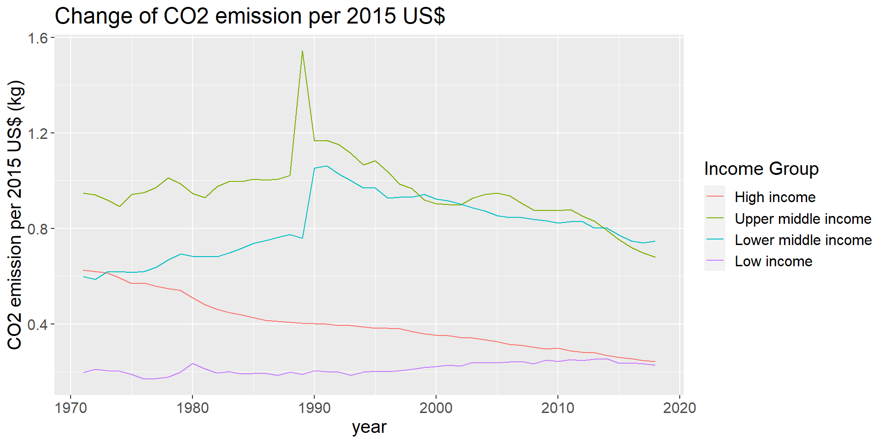

Chapter 5 Results
5.1 Does the increase of education attainment and better overall economic condition decrease the income inequality?
We would like to investigate on the education enrollment conditions. However most of the indicators with Education topic have a high percentage of missing, lacking the data of more than 100 countries on average, making it hard to analysis on a comprehensive way. We choose one critical indicator Primary completion rate, total (% of relevant age group) and have a closer look into its condition of missing values.

We can see that the missing records in high-income countries is even higher than that of low-income countries. In addition, since education has been a heated topic only in the few decades, we can observe that there is fewer missing values only after 1998. Therefore, we can only explore the problem related to education in a shorter period, 1999 - 2017, than others. In addition, the missing rate are similar in different income groups, which dispels the misgiving that removing the countries with no data will lead to a biased distribution between income groups.
Unfortunately, the income distribution data, such as Income share held by lowest 20%, Income share held by highest 20%, has too much missing values to study. Only the data of about 30 countries recorded, making it impossible to investigate on the general trend worldwide. Therefore, we had to turn to another indicator with more complete data. We choose Life expectancy at birth, total as a good substitute since it can reflect the overall well-being of a country.
To investigate on the correlation between education and life expectancy, we first draw a plot at year 2010.

From the plot, we can see a obvious positive correlation between the primary completion and the life expectancy. Here we need to note that the primary completion rate can be more than 100 since it is the fraction of students enrolled in the last year divided by the students enrolled in the first year, thus the situation of repeating and inserting will lead to a higher completion rate than expected. Although we can not draw the conclusion that higher primary complete rate directly leads to a higher life expectancy, we can say that they are highly correlated and both are indicators of the overall well-being of a country.
After that, we would like to see the change of education indicators and life expectancy in a longer run.

From the plot we can that both the primary completion rate and life expectancy increase with higher income group. The primary completion rate in higher- and upper-middle-countries are always in the high range and that of lower-middle and low-income countries also grow repidly thanks to the increasing focus of fundamental education in these areas.
5.2 Is there a corelation between greenhouse emissions and financial indicators, quality of life, etc?
We first examine the emission of greenhouse gases per capita facet by the income group. We choose the year 2000 can draw a boxplot to see the overall distribution. 
From the plot, we can see the evidence that countries with higher income emit more co2 per person. Most of the low-income countries emit almost negligible co2 compared with high-income countries. However, this may due to the fact that the production of high-value product requires more energy and low-income countries tend to have bigger population. Therefore, we also investigate on the greenhouse emission per 2015 US$.

This plot gives us some different insight against the former one. The plot shows that high and low income countries emit relatively fewer co2 to generate unit GDP than that of middle countries. The reason may comes from the fact that high-income countries have a wholesome system of service sector that can make a lot of profit with relatively low pollution while the low-income countries focus on fundamental livings which also emit few co2. In contrast, middle-income countries may focus on industrial section, which will emit high amount of co2 for each unit of GDP.
At last, we would like see the annually varying situation of the two above-mentioned metrics.

We can see that the trend is close to what is shown in the boxplot of CO2 emission per capita, which increases with the increase of income group. We can also observe that the emission per capita in high-income countries drops in the recent years, which may credits to the development of service section and the arise of environment-protect activities. On the other hand, the emission in upper-middle-income countries bursts after 2000, because of the rapid industrialization in these countries. Also, we can observe that the emission of lower-middle-income countries and low-income countries have a cross at about 1990, while the record of upper middle income countries drop sharply at the same time, because the additional data brought by the disassembly of Soviet Union.
Similarly, we want to discover the annually change in CO2 emission per 2015 US$ by plotting a line graph.

From the plot, we can reconfirm the boxplot for year 2010 that middle income countries emits more CO2 to produce unit GDP while high-income and low-income emits less. We also see a sharp spike at about 1990 in upper-middle and lower-middle-income countries, which also owes to the disassembly of the Soviet Union. In addition, except for the low-income countries, the world shows a steady drop of CO2 emission per dollar after 1990, owing to the fact that the development of technology can practically reduce the CO2 emission per product.
5.3 Does richer countries use more renewable sources for electricity production and does this indeed reduce the emission of CO2 and NOx?
123